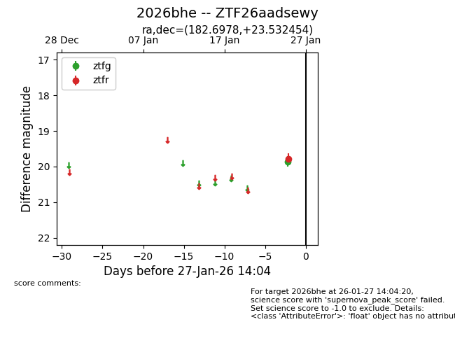
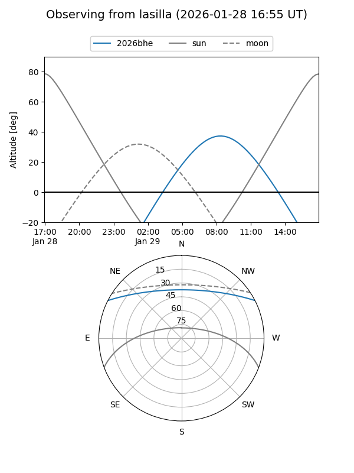
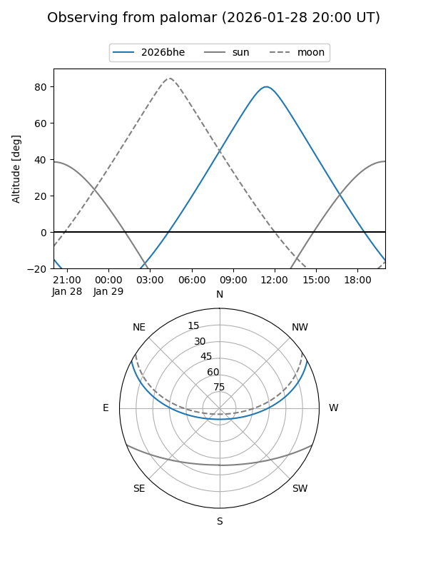

2026bhe
Target 2026bhe at 2026-01-26 07:26
Aliases and brokers:
FINK: link
Lasair: link
ALeRCE: link
TNS: link
YSE: link
alt names
ZTF26aadsewy (ztf,fink_ztf)
2026bhe (tns,yse)
Coordinates:
equatorial (ra, dec) = 182.6978,+23.53245
equatorial (HMS+DMS) = 12:10:47.47,+23:31:56.83
galactic (l, b) = (232.0784,+80.14090)
Flags:
Photometry:
last ztfr=19.78
1 ztfr detections
Lightcurve

Visibility


Additional plots